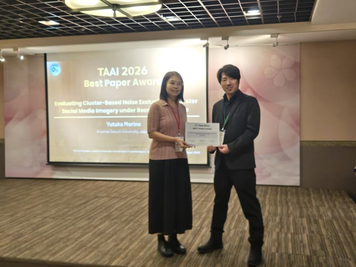
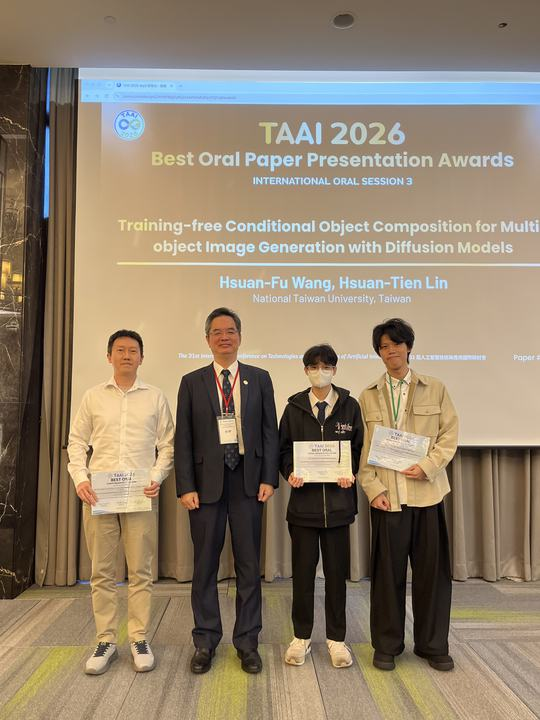

【2026 年 11 月 22 日／臺灣新北市】由中華民國人工智慧學會（TAAI）與國立臺北大學共同主辦的「第 31 屆人工智慧技術與應用國際研討會」（TAAI 2026），11 月 20 日至 21 日於新北市三峽大板根森林溫泉酒店舉行。本屆以「代理式 AI 與實體 AI 跨域永續創新」為主題，共收到 205 篇投稿，157 篇論文於 21 個場次發表；450 位論文作者來自 13 個國家與地區、約 90 個機構，其中日本作者參與 23 篇論文。
兩天議程包括 69 篇國際組與 88 篇國內組論文，經由 14 個口頭場次與 7 個海報場次發表，內容涵蓋大型語言模型、代理式 AI、電腦視覺、語音處理、強化學習與智慧應用。國際組論文將由 Springer 以 Communications in Computer and Information Science（CCIS）post-proceedings 形式出版。為響應永續，本屆不印製紙本手冊，議程、摘要與大會手冊皆於官網提供。
四場國際主題演講
大會邀請四位學者發表主題演講：
- Philip S. Yu 教授（美國伊利諾大學芝加哥分校傑出教授，ACM／IEEE／AAAS Fellow）：以黎曼幾何建構下一代圖基礎模型。主持人：國立臺北大學戴志華教授
- 曹昱研究員（中央研究院）：神經語音增強與評估及其在輔助口語溝通的應用。主持人：中央研究院資訊科學研究所陳伶志研究員
- Ljiljana Trajkovic 教授（加拿大西門菲莎大學，IEEE Fellow）：以 AI 分析網路流量進行異常偵測與資安防護。主持人：國立臺北大學電機資訊學院楊棧雲院長
- Kazunori Komatani 教授（日本大阪大學產業科學研究所）：對話系統對使用者的長短期適應。主持人：國立臺灣大學電機工程學系李宏毅教授
國際座談、專題教學與青年女性之星
- 國際座談《Adaptive AI in the Real World》：由陳伶志研究員主持，曹昱研究員、Ljiljana Trajkovic 教授與 Kazunori Komatani 教授與談，探討自適應 AI 在真實世界的挑戰與機會。
- Agentic AI 專題教學 1：昊智未來科技創辦人崔殷豪主講「企業落地實戰：確定的步驟寫成工具，判斷與生成才交給 LLM」，戴敏育教授主持。
- Agentic AI 專題教學 2：國立臺南大學林豪鏘教授主講「從現代詩到一鏡到底：AI 影片創作的分鏡與運鏡技法」，潘令妍教授主持。
- Physical AI 專題教學：國立臺灣大學孫紹華副教授主講「實體人工智慧：透過擴散模型模仿學習打造智慧具身代理」，胡敏君教授主持。
- 青年女性之星場次：古倫維研究員召集、胡敏君教授主持，中央研究院連云暄助研究員、國立陽明交通大學江孟芬助理教授與簡婉軒助理教授，分享強化學習、可信賴的大型語言模型推理與情感運算研究。
特邀場次：國科會、產業與跨域永續
- 國科會智慧計算學門：學門召集人張嘉惠教授主持。陳銘憲教授（國立臺灣大學）、曾新穆教授（國立陽明交通大學）與高宏宇教授（國立清華大學）報告中堅躍升研究計畫；學門並說明業務與子領域政策規劃，第 2 天成果展展出 13 件計畫成果。
- 產業軌道 1：台灣人工智慧學校蔡明順校務長主持，全家便利商店黃士杰部長談 AI 驅動下的商業模式與企業韌性，資策會產業情報研究所朱師右組長談 AI Agent 驅動的產業應用與營運轉型。
- 產業軌道 2：國立臺北科技大學鍾建屏教授主持，吉格線技術長簡楷峯談語音虛擬人與混合實境，荔枝智慧執行長何健偉談 AI 代理的權限、覆核與稽核設計。
- AI CUP：朝陽科技大學吳世弘教授主持，與戴敏育教授、國立高雄科技大學戴鴻傑教授分享競賽設計、ESG 永續承諾驗證競賽，以及競賽成果轉為國際發表的經驗。
- 跨域 AI 永續創新論壇（三場）：分別由戴敏育教授、國立臺北大學永續創新國際學院詹佳縈院長、汪志堅特聘教授主持。講者包括國立中興大學金士懿博士（AI 驅動的能源治理）、鍾建屏教授（金融 RAG 聊天機器人評估）、巴桑塔教授（可信賴且永續的 AI）、張瑋倫教授（永續 AI 治理）、汪志堅特聘教授（數位落差）、台灣法學基金會錢世傑執行長（生成式 AI 法學教材），以及火星生技董事長董澤平講座教授（生技健康產業 AI 轉型）。
競賽、論文獎與新一代研究者
- TAAI 碩博士論文獎：8 篇得獎論文口頭報告，由國立中央大學鍾佳儒教授主持。
- 高中生口頭場次：國立成功大學黃仁暐教授主辦，長篇論文 4 篇、短篇論文 6 篇。
- NAPAI Agentic AI 校園落地創新應用競賽決賽暨頒獎（合作活動，主辦單位：NAPAI 智慧代理與實體 AI 推動計畫辦公室）：張嘉惠教授主持，16 隊現場 DEMO 評選。
- 電腦對局競賽以線上方式進行；11 月 20 日中午並召開 TAAI 會員大會。
21 個論文發表場次
論文場次在會議室 A（國際口頭 7 場）、會議室 B（國內口頭 7 場）與海報區（海報 7 場）同時進行，由 28 位場次主持人主持，主題涵蓋大型語言模型與自然語言處理、電腦視覺與多模態、醫療與健康 AI、AI 代理人與檢索增強生成、語音與聲學、資訊安全與可信 AI、電腦對局與遊戲 AI、資料探勘、最佳化與強化學習，以及 AI 與教育。
28 項獎項揭曉，電子證書上線
論文獎於 11 月 20 日歡迎晚宴頒發，共 7 篇論文獲獎。最佳論文獎由下列三篇論文獲得：
- 《LAWRENCE: A Benchmark for Adversarial Lawyering in Taiwanese Criminal Law》（國立臺灣大學）
- 《Training-free Conditional Object Composition for Multi-object Image Generation with Diffusion Models》（國立臺灣大學）
- 《Evaluating Cluster-Based Noise Exclusion in Disaster Social Media Imagery under Recall Constraints》（日本青山學院大學）
最佳學生論文獎由國立臺灣大學、國立中央大學及國立臺灣師範大學的三篇論文獲得；最佳產業論文獎由資訊工業策進會獲得。論文發表獎於 11 月 21 日閉幕典禮頒發，共 14 篇獲最佳口頭論文發表獎、7 篇獲最佳海報論文發表獎。
大會為每一項獎項建置專屬證書頁，提供永久網址、證書預覽與 PDF 下載；證書上的 QR Code 可連回官網供查核。完整得獎名單與證書：TAAI 2026 論文獎項證書。
引述
中華民國人工智慧學會理事長暨大會主席蔡宗翰表示：「當 AI 從回答問題走向自主規劃、使用工具、完成任務，又進一步走進機器人與真實世界，我們需要的不只是更大的模型，更是跨領域合作，以及對永續與可信賴 AI 的共同承諾。學會希望把學界研究、產業需求與下一代人才串在一起。」
國立臺北大學校長林道通表示：「很榮幸與中華民國人工智慧學會共同主辦 TAAI 2026。兩天來，來自 13 個國家與地區的研究者在三峽交流代理式 AI 與實體 AI 的最新成果。臺北大學將持續投入 AI 研究與人才培育，推動跨域永續創新。」
大會主席戴敏育表示：「TAAI 2026 的圓滿成功，有賴來自國立臺北大學、中央研究院、國立臺灣大學、國立清華大學、國立中央大學、國立成功大學、國立陽明交通大學、日本國立情報學研究所等 21 個機構、共 61 位籌備委員的通力合作與無私付出。特別感謝國立臺北大學林道通校長、張玉山副校長、商學院黃啟瑞院長、電機資訊學院楊棧雲院長及永續創新國際學院詹佳縈院長的鼎力支持；也感謝資訊管理研究所汪志堅特聘教授、溫演福教授、潘令妍副教授、黃懷陞助理教授，以及鄧雅燕助教、AI4X 研究中心陳思因、AIAM 學程葉育瑜，帶領跨領域學生團隊全心投入，為大會的順利舉辦貢獻心力。此外，誠摯感謝 450 位作者的踴躍參與，以及所有致詞貴賓、主題演講講者、國際座談主持人與與談人、專題教學與特邀場次講者、場次召集人與主辦人、場次主持人、競賽評審與參賽隊伍、審稿委員，以及全體工作人員與志工的熱情參與及辛勤付出。本屆共頒發 28 項獎項，所有得獎者均可至大會官網下載電子證書。再次感謝所有夥伴的支持與付出，期待明年 TAAI 再相會，攜手開創人工智慧研究與應用的更多可能！」
致謝
本屆研討會由國家科學及技術委員會、教育部與教育部資訊及科技教育司指導，中央研究院、中央研究院資訊科技創新研究中心、中央研究院資訊科學研究所與工業技術研究院協辦。感謝金級贊助台達機器人創新研究院，銅級贊助台灣人工智慧學校與潮網科技（高中生註冊費指定贊助），以及國立臺灣大學、日本國立情報學研究所等 23 個合作單位的支持，並感謝全體審稿委員、場次主持人與工作人員。
活動照片







關於 TAAI
中華民國人工智慧學會（TAAI）推動人工智慧在臺灣的研究、教育與應用。TAAI 每年與臺灣各大學及研究機構共同舉辦人工智慧技術與應用國際研討會，匯集國內 AI 社群與國際同儕。TAAI官網：https://www.taai.org.tw/（外部網站，另開新分頁）。
關於國立臺北大學
國立臺北大學（NTPU）於 2000 年由國立中興大學法商學院改制成立，主校區位於新北市三峽區。臺北大學的師資橫跨資訊科學、資料科學、商學與法律，設有法律學院、商學院、公共事務學院、社會科學學院、人文學院、電機資訊學院與永續創新國際學院七個學院，為本屆跨領域議程奠定基礎。臺北大學官網： https://new.ntpu.edu.tw/（外部網站，另開新分頁） 。
媒體聯絡
- 聯絡單位：國立臺北大學 資訊管理研究所 鄧雅燕 助教
- Email：taai2026org@gmail.com
- TAAI 2026 官網：https://taai2026.github.io/